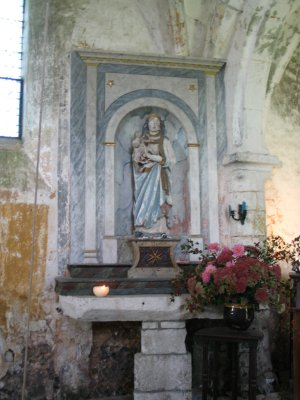
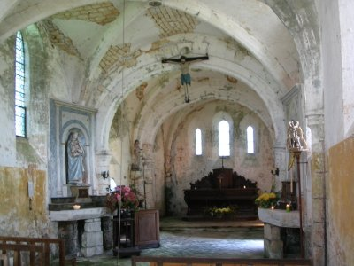
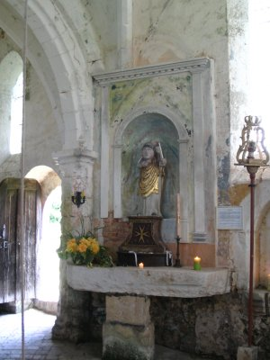
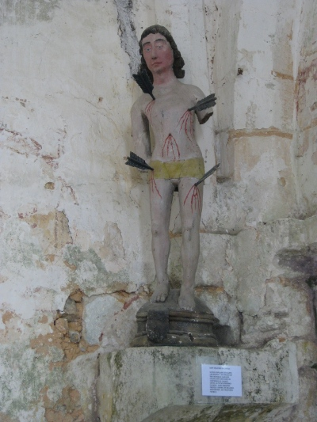
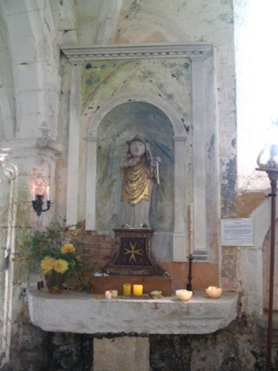
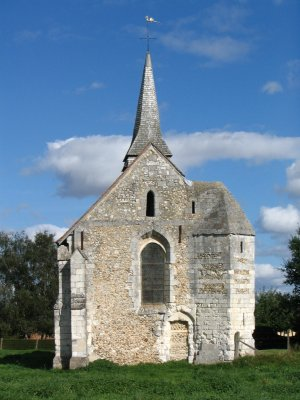
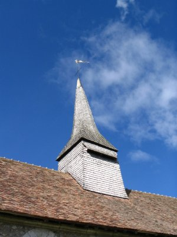

Eglise Saint Michel en 2004
Les statues de l'église Saint Michel
|  |
 |
 |
| Saint SébastienXVème siècle |
Saint Clair |
La Vierge Marie |
|
Le plus populaire des saints anti-pesteux. Son image est très répandue dans nos églises ainsi que dans les confréries de charité. Depuis la fin des épidémies de peste, Saint Sébastien protège contre les maladies infectieuses, les "mauvaises fièvres" |
Saint Clair est uniformément un saint céphalophore, soit qu'il tienne sa tête toute entière, soit qu'il présente seulement sa calotte crânienne. Ce martyr du Vexin (Saint Claire sur Epte) est connu et invoqué dans toute la Normandie. Sa biographie légendaire en fait un anglais de Rochester qui débarqua près de Cherbourg, à Nacqueville, parcourut le Cotentin, puis le Bessin, puis le Lieuvin, se fixa quelques temps dans la région de Bernay et termina ses jours dans le Vexin où il fut décapité, victime, dit-on, d'une femme qui le poursuivait de ses assiduités. Il est invoqué partout pour les affections oculaires. |
voir l'extérieur
 
Le clocher est dans la région le seul qui ait conservé son revêtement en essentes, mode de couverture autrefois répandu en Normandie car les éléments s'en trouvaient dans tous les bois alentours.